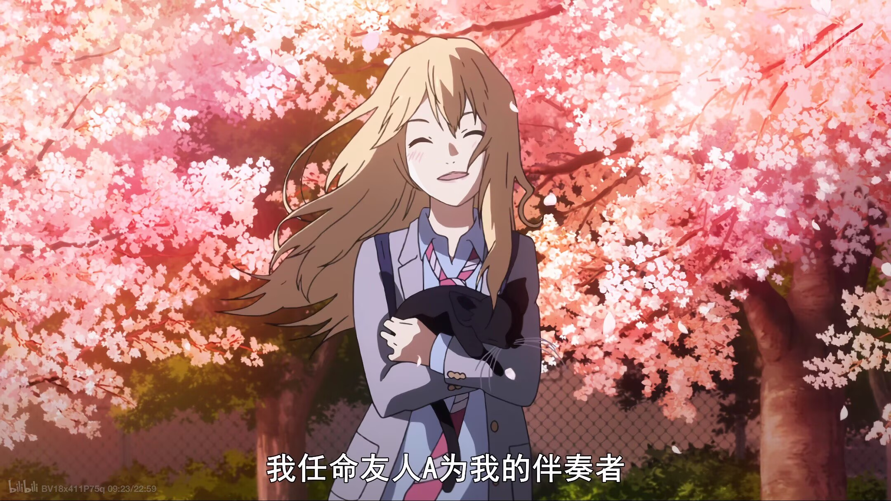

角色介绍

有马公生
钢琴神童，母亲去世后听不到琴声。在薰的帮助下重新拾起钢琴，走出阴影。

宫园薰
开朗的小提琴手，用谎言接近公生，用最后的生命照亮他的世界。

泽部椿
公生的青梅竹马，性格开朗，一直默默守护、关心公生。

渡亮太
公生的好朋友，性格阳光，是团队里的开心果。
有马公生曾是被誉为“人形节拍器”的钢琴神童，在母亲严苛教导下屡获大奖。11岁母亲突然离世，巨大的打击让他无法再听见琴声，从此放弃钢琴，生活陷入灰暗。
国中三年级，经青梅竹马泽部椿介绍，公生遇见了自由奔放的小提琴手宫园薰。薰耀眼不羁的演奏深深打动他，并强行拉他重回舞台担任伴奏。
薰一直隐瞒重病，用生命最后的时光照亮公生。公生后来才知道，这场相遇是她精心编织的温柔谎言。
钢琴神童，母亲去世后听不到琴声。在薰的帮助下重新拾起钢琴，走出阴影。

开朗的小提琴手，用谎言接近公生，用最后的生命照亮他的世界。
公生的青梅竹马，性格开朗，一直默默守护、关心公生。
公生的好朋友，性格阳光，是团队里的开心果。
-虽然喜欢了你十年，却用整个四月编了一个不爱你的谎言。
-春天马上就要来了，让我与你相遇的春天就要来了，再也没有你的春天…就要来了。
-或许前路永夜，即便如此我也要前进，因为星光即使微弱也会为我照亮前路。
-我是否住进了某人的心房呢？连鞋都没脱就住进来了呢。
-你驻足于春色之中，于那独一无二的春色之中。